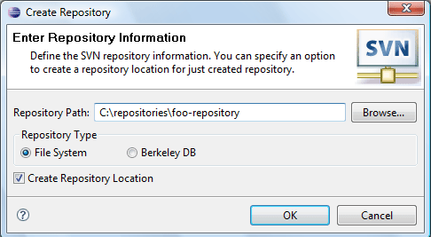

|
|
|
This facility provides a probability to create a new repository on local drive. There are two kinds of file system type: File System and Berkley DB which the user can select. There is option to create a repository location for just created repository which uses file:/// scheme (direct repository access). Accessible from 'SVN Repository View' (click on 'New Repository' button).
|
Note: |
The Create Repository operation is available only for JavaHL SVN Connector. If the user selects SVN Kit connector the action is not enabled. |
This is how 'Create Repository' looks like:
